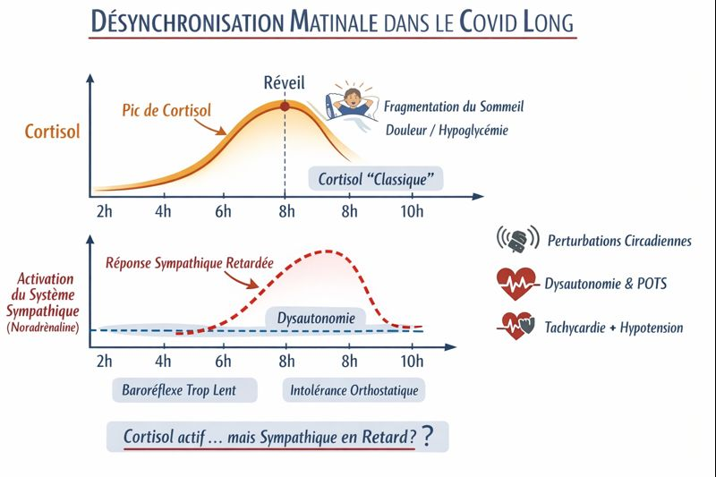

Réveil déjà fatigué : ce qui se passe vraiment
Vous ouvrez les yeux. La nuit a eu lieu. Et pourtant, rien ne démarre — ou au contraire, vous vous réveillez à 4 h du matin avec une sensation d'adrénaline dans le corps, sans avoir dormi. Dans les deux cas, le réveil ne remplit pas sa fonction.
Ce n'est pas un problème de motivation, ni un manque de volonté. C'est souvent un problème de synchronisation entre plusieurs systèmes biologiques qui, d'ordinaire, travaillent ensemble.
🧭 L'essentiel en 30 secondes
- Se réveiller fatigué malgré un sommeil suffisant en durée est un signal documenté — il peut refléter une architecture du sommeil altérée, un sommeil non récupérateur ou une dysfonction mitochondriale.
- Dans le Covid long et la fibromyalgie, ce symptôme est associé à un manque de sommeil lent profond (stade N3) et à une hyperactivité du système nerveux autonome pendant la nuit.
- Suivre la qualité perçue du sommeil sur 30 jours permet d'identifier des patterns et des déclencheurs — une information utile pour orienter une prise en charge adaptée.
Le réveil normal : une chorégraphie, pas un interrupteur
Un réveil fonctionnel n'est pas instantané. Il repose sur une cascade coordonnée qui débute avant même que vous ouvriez les yeux :
- Le cortisol amorce sa montée en fin de nuit — c'est ce qu'on appelle la réponse d'éveil cortisol (CAR). C'est le signal de démarrage métabolique.
- Le système sympathique (via la noradrénaline) prend le relais : il ajuste la vigilance, la fréquence cardiaque, le tonus vasculaire, la pression artérielle.
- La dopamine active les circuits de motivation et d'initiation motrice — ce qui permet de vouloir se lever, pas seulement de pouvoir le faire.
Ces trois systèmes sont normalement couplés. Quand ce couplage se défait, le réveil devient un obstacle.
Quand les horloges se désynchronisent

Dans certaines conditions — Covid long, fibromyalgie, syndrome de fatigue chronique — on observe une perte de couplage entre l'axe HPA (cortisol), le système nerveux autonome et l'horloge centrale du cerveau.
Le cortisol peut suivre son timing habituel, mais le système sympathique se déclenche de façon anarchique : trop tôt (hyperéveil nocturne), trop tard (démarrage impossible le matin), ou en à-coups provoqués par des micro-réveils, la douleur, la posture, ou une légère variation de glycémie.
Ce dérèglement du rythme cortisol est l'une des manifestations de l'axe HPA sous surcharge chronique — qui touche bien d'autres systèmes que le sommeil. Voir comment la fatigue mentale affecte le corps →
Résultat : deux profils opposés qui viennent du même problème.
Réveil à 4–5 h, sensation d'adrénaline, palpitations, impossibilité de se rendormir. Le corps interprète la nuit comme du jour.
Yeux ouverts, corps présent, mais aucune impulsion pour commencer. Le corps interprète le matin comme une continuation de la nuit.
La station debout comme épreuve supplémentaire
La noradrénaline n'est pas seulement un signal d'éveil neurologique. C'est aussi le principal vasoconstricteur périphérique au lever. Quand le tonus sympathique est dysrégulé, le passage couché → debout devient un défi hémodynamique : le sang stagne dans les jambes, la pression de perfusion cérébrale chute, la compensation est insuffisante.
Vertiges, flou visuel, brouillard mental dès les premières minutes debout — ce n'est pas "être dans le coaltar". C'est une tolérance orthostatique réduite, conséquence directe de la dysrégulation autonome du matin. Dans l'EM/SFC sévère, même la position assise peut représenter un stress orthostatique significatif pour certains profils.
La nuit n'a pas rechargé les réserves
Un troisième facteur s'ajoute souvent : le sommeil a eu lieu biologiquement, mais la restauration cellulaire n'a pas suivi. Dans la fibromyalgie, des études ont documenté une intrusion d'ondes alpha en phase de sommeil profond — le cerveau reste en demi-vigilance au lieu de basculer en récupération réelle. Dans le Covid long, la fragmentation du sommeil produit un effet similaire.
Les réserves d'ATP ne sont pas reconstituées. On se réveille avec un niveau d'énergie cellulaire déjà bas — indépendamment de l'heure de coucher ou de la durée de la nuit.
Ce qu'on peut faire
Aucun de ces mécanismes n'est irréversible. Mais les gérer demande d'abord de les identifier. Voici les leviers les mieux documentés en première intention.
-
🛏️
Sécuriser le passage couché → debout. Rester assis 1 à 2 minutes avant de se lever. Mobiliser les chevilles et les jambes avant de se mettre debout. Boire quelques gorgées d'eau dès le réveil.
-
💡
Réduire les déclencheurs d'hyperéveil nocturne. Lumière tamisée le soir, température fraîche, régularité des horaires — pour aider les trois horloges à se resynchroniser.
-
🔀
Fractionner le matin. Plutôt qu'un seul bloc d'activité, deux mini-séquences avec une pause entre les deux. Éviter les décisions ou interactions exigeantes tant que le système n'est pas stabilisé.
-
🌬️
Respiration lente au réveil. 3 à 5 minutes de respiration abdominale lente peuvent aider à freiner l'emballement du système nerveux autonome en cas de réveil "adrénaline".
-
📊
Observer pour objectiver. Noter chaque matin son niveau d'énergie (0 à 10) et l'heure de réveil sur quelques jours permet de repérer des patterns — et d'en parler utilement avec un professionnel de santé.
🧭 Suivre son réveil pour y voir plus clair
Boussole vous permet de noter chaque jour votre énergie, votre sommeil et votre confort physique. Pas pour poser un diagnostic, mais pour objectiver ce que vous ressentez et rendre ces données utiles lors d'une consultation.
Essayer Boussole gratuitementSources
- Dani M et al. Autonomic dysfunction in 'long COVID'. Clin Med, 2021. PMC7850225
- Fedorowski A. Postural orthostatic tachycardia syndrome and post-COVID. Nat Rev Cardiol, 2023. nature.com
- HRS Consensus Statement on POTS and Orthostatic Intolerance. PMC5267948
- CMAJ 2022 – Diagnosis and management of POTS. PMC8920526
- Medicina 2021 – Orthostatic symptoms and cerebral blood flow in long-haul COVID-19. PMC8778312
- Healthcare 2020 – Reductions in cerebral blood flow in severe ME/CFS. PMC7712289
- Moldofsky H. The significance of the sleeping-waking brain for the understanding of widespread musculoskeletal pain and fatigue in fibromyalgia syndrome. Joint Bone Spine, 2008.
- PLOS ONE 2025 – Tilt/active stand test and dysautonomic symptoms in post-COVID. journal.pone.0335218